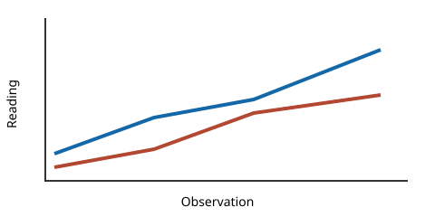

Chapter I: Signals at Dawn
The observatory records a signal before sunrise. The inline relation remains attached to this sentence, beside an inline image .
"Record the first reading," said the coordinator.
- Inspect the sensor.
- Preserve the source order.
- Mark uncertain structure for review.

| Sensor | Reading | Unit |
|---|---|---|
| Alpha | 12.5 | V |
| Beta | 7.0 | V |
def calibrate(value: float) -> float:
return value / 2